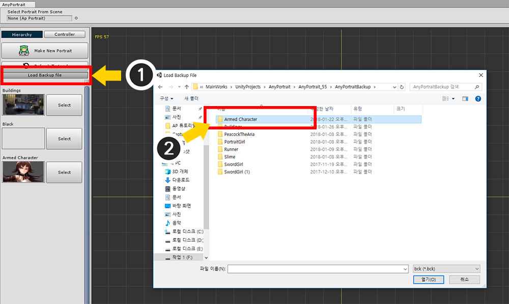
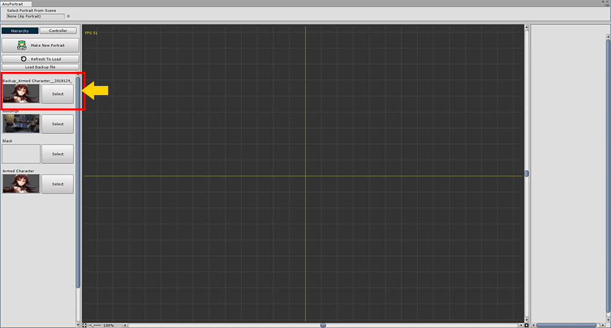

AnyPortrait > 메뉴얼 > 백업 파일 저장과 열기
백업 파일 저장과 열기
1.0.0
작업한 결과물이 불의의 사고로 손상되거나 이전 시점의 작업물로 돌려놓고 싶을 경우가 있습니다.
이 페이지에서는 수동 또는 자동으로 백업 파일을 저장하고, 저장된 백업 파일을 여는 방법을 설명합니다.
수동으로 백업 파일 저장하기

(1) 설정 버튼을 눌러서 Setting 다이얼로그를 엽니다.
(2) Portrait 탭에서 Save Backup (Manual) 버튼을 누르고 파일을 저장합니다.
자동으로 백업 파일 저장하기

기본적으로 작업을 하면서 일정 시간마다 자동으로 백업 파일을 저장 합니다.
설정을 이용해서 자동으로 백업을 할 지 결정할 수 있고, 백업 시간과 저장 경로를 지정할 수 있습니다.
(1) 설정 버튼을 눌러서 Setting 다이얼로그를 엽니다.
(2) Editor 탭에서 Auto Backup Setting의 값을 변경할 수 있습니다.

자동 백업이 켜져 있다면 설정된 시간 마다 백업 파일을 저장합니다.
자동 백업 기능은 다음과 같은 특징이 있습니다.
- 자동 백업이 시작된 상태에서도 작업을 계속 할 수 있습니다.
- 데이터가 많다면 에디터가 조금 느려질 수 있습니다.
- 백업 파일은 10개 정도 생성 되고, 그 이상이 되면 가장 이전에 생성된 백업 파일을 삭제합니다.
- apPortrait, 씬 마다 각각의 하위 폴더가 생성되어 구분하기 쉽습니다.
- 자동 백업 도중에 AnyPortrait를 종료해도 상관없습니다. 다만, 유니티가 잠깐 멈출 수 있습니다.
- 기본 백업 폴더 경로는 "(유니티 프로젝트 폴더)/AnyPortraitBackup" 입니다.
백업 파일 열기


백업 파일을 열어서 apPortrait를 생성할 수 있습니다.
AnyPortrait 에디터 첫 화면에서 (1) Load Backup File 버튼을 누릅니다.
(2) 백업이 저장된 폴더를 선택한 뒤 파일을 엽니다.
자동 저장된 파일이라면 하위에 "apPortrait 이름/씬 이름" 폴더가 있습니다. 여기서 백업 파일을 찾을 수 있습니다.

백업 파일을 열면 "Backup_"으로 시작되는 apPortrait가 새로 생성된 것을 볼 수 있습니다.
(위 화면은 설명을 위한 것으로, 백업 파일을 열면 바로 생성된 apPortrait를 선택하여 작업할 수 있도록 준비합니다.)